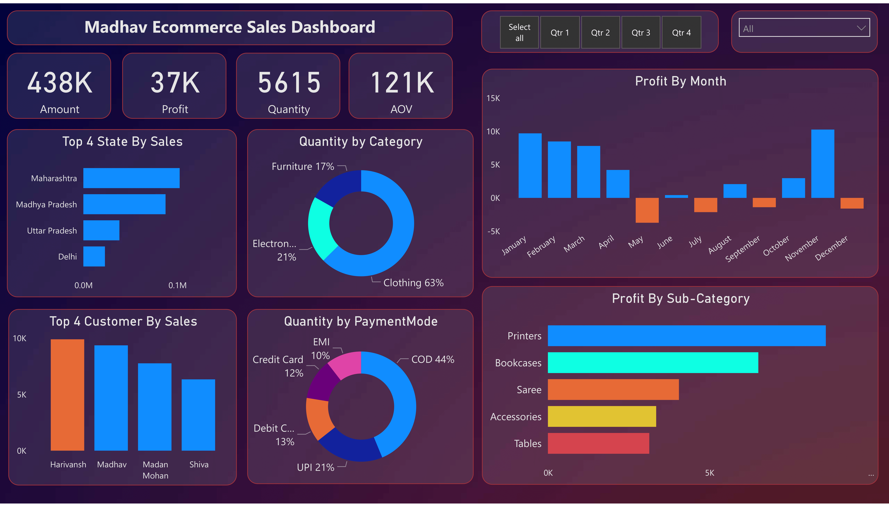
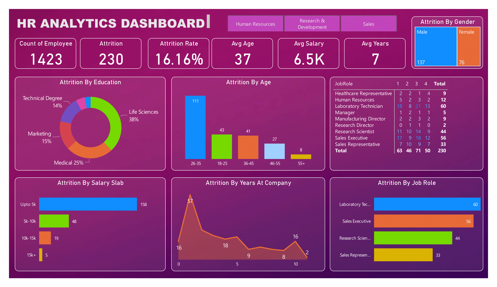

• Designed a Power BI dashboard to understand AtliQ hardware goods sales trend.
• The final dashboard was effective at displaying the sales trend of AtliQ hardware, allowing users to understand
the data and make informed decisions.
• This dashboard could help in increasing the revenue at least by 7% in the next quarter.
• Designed a Power BI dashboard to track employee data for the HR team, including working hours, attendance,
performance, and leaves. The dashboard streamlined HR processes and increased efficiency.
• It analyze sick leave trends and performance metrics of employees
• This Dashboard can save 3-4hrs of work for the HR daily

• Atliq Grands noticed a loss in their market share and revenue over a few months. To understand the cause of this loss, they needed a way to analyze this. I created a dashboard in Power BI using three months of data.
• With the created dashboard, Revenue team of Atliq Grands were able to gain insights about their revenue trend. This could help in regaining their revenue and market share by 20% in the next month.
• I worked through the entire business intelligence workflow: connecting and shaping the source data, building a relational model, adding calculated columns and measures, and designing an interactive report.
• It tracks KPIs (sales, revenue, profit, returns), and compares regional performance.
• It shows revenue trends, location wise sales and return trends in Canada, Mexico and the United States.

• Created interactive dashboard to track and analyze online sales data.
• Used complex parameter to drill down in worksheet and customization using filters and slicers.
• Created connections, join new tables, calculations to manipulate data and enable user driven parameters for visualizations.
• Designed the interactive report to analyze and visualize sales data using Power BI, DAX measures
and also build a relational data model.
• It tracks KPIs (sales, revenue, profit, returns), and compares regional performance.
• It analyze product level trends and forecasts sales and profits of a product.
• It identifies high value customers and their demographics and psychographics.

• Build this HR Analytics dashboard using Power BI .
• This can track employees data and help the company to take important decisions using KPIs .